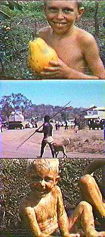

|
 |
Travis
and Daryl soon became best friends, walking with their arms around each other's
shoulders. Daryl was from Warrahbah, an aboriginal mission 10 minutes downstream, and he taught Travis his secret language. The language involved adding an extra two syllables to each and every syllable, a torturous neologism that rendered Travis as Trallabavillabis. Although this could drag a five minute exchange into half an hour of doggerel, it had the required effect of any secret language... ...exclusion of the uncomprehending. |